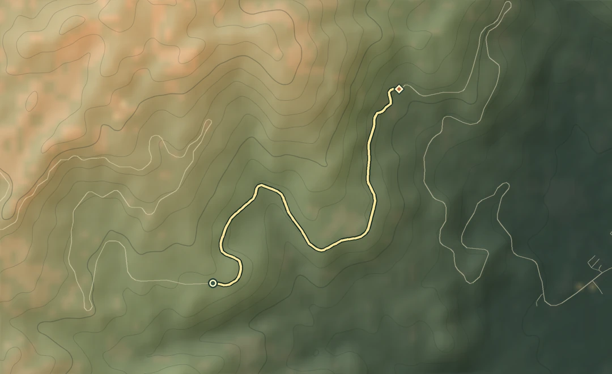

Sông Pha · Đơn Dương
Đèo Ngoạn Mục
Từ lưu vực Sông Pha lên cao nguyên, các khúc ngoặt bám sát sườn núi. Triền rừng và đồng bằng mở ra ở hai cao độ khác nhau.

Chặng lái mô phỏng
- Cảnh quan
- Sườn cao nguyên
- Chiều dài chặng
- 3,2 km
- Tổng leo dốc theo mặt đường trong game
- 77 m
- Tọa độ xuất phát
- 11,83084° B, 108,65935° Đ
- Tọa độ về đích
- 11,84311° B, 108,6714° Đ